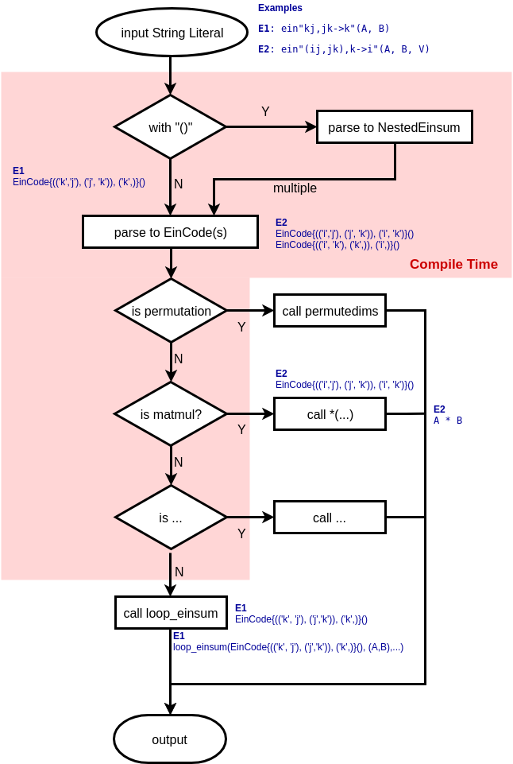

OMEinsum.jl
This package exports one function, einsum, with three interfaces. einsum implements functionality similar to the einsum function in numpy, although some details are different.
einsum operations are specified by a tuple of tensors xs = (x1, x2, x3...) , a tuple of index-labels for the tensors in xs, ixs = (ix1, ix2, ix3...), and output index-labels iy specified as einsum(EinCode(ixs,iy), xs). Alternatively, operations can be specified using the @ein-macro or the @ein_str- string literal (see examples or help).
Let l be the set of all unique labels in the ixs without the ones in iy. einsum then calculates an output tensor y with indices labelled iy according to the following specification:
where the sum over l implies the sum over all possible values of the labels in l.
As an example, consider the matrix multiplication of two random 2×2 tensors, where we have:
xs = (rand(2,2), rand(2,2))
ixs = (('i','j'),('j','k'))
iy = ('i','k')Now l = ('j',) since all unique indices are ('i','j','k') but both 'i' and 'k' are in iy. The output y is then defined by
which is just the regular definition of matrix multiplication. Alternatively it could've been specified with a custom string-literal as ein"ij,jk -> ik"(rand(2,2),rand(2,2)), see Input (flat).
The structure of an einsum evaluation with the string-literal is depicted in the flowchart below: 